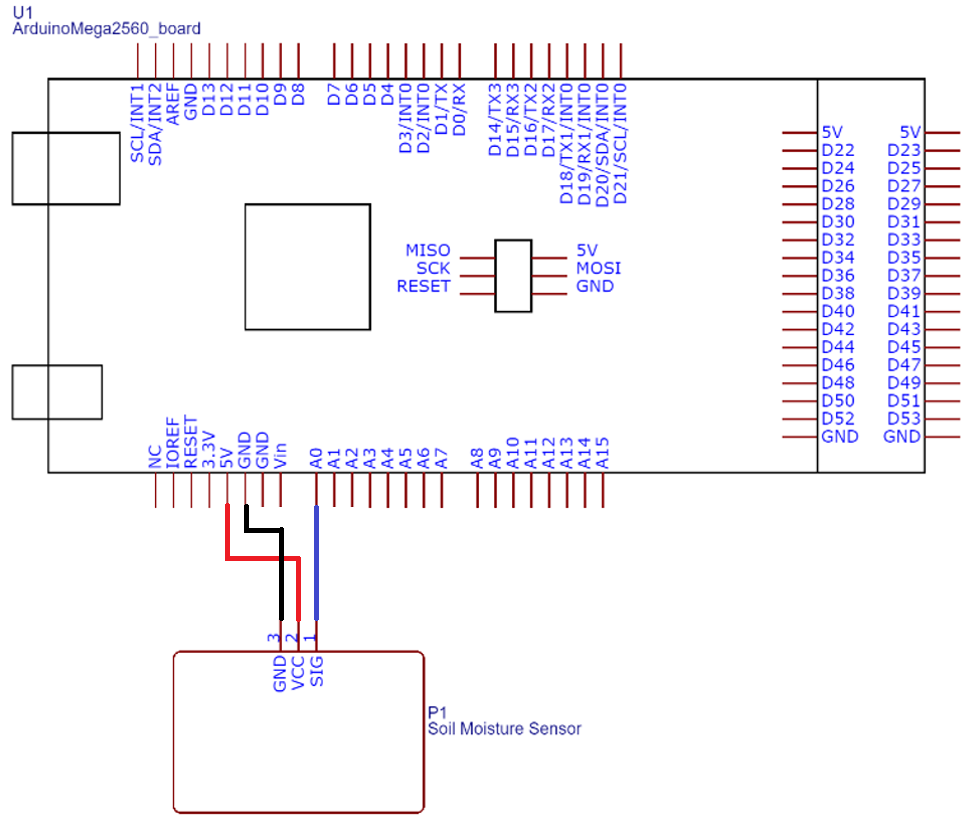
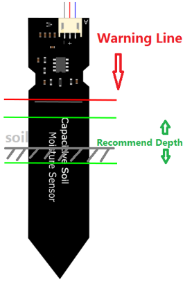
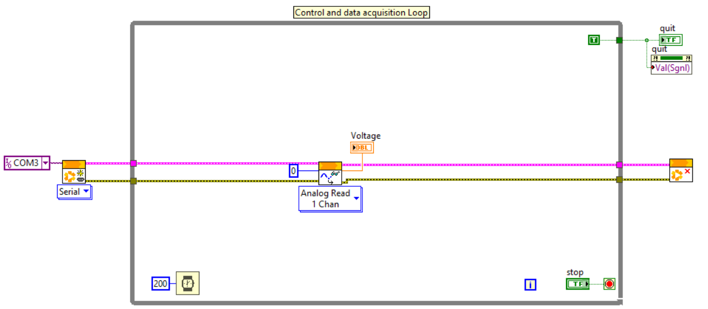
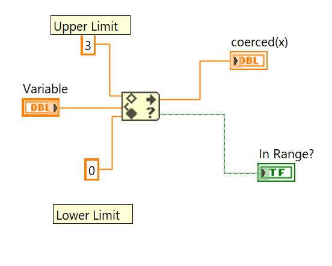
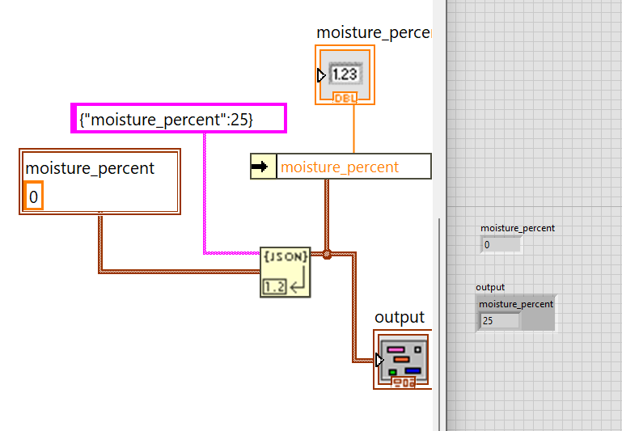

Telemetry feedbackReport low_moisture_alarm to ThingsBoard.
Prepare
Scenario and setup
You are building an IoT plant-monitoring node. Arduino Mega sends sensor voltage to LabVIEW through LINX. LabVIEW performs calibration and the primary low-moisture decision locally, then exchanges telemetry and a persistent threshold with ThingsBoard Cloud over MQTT.
Water-near-electronics caution: fill the cup only one-third with water. Keep hands dry. Do not spill water on Arduino, breadboard, laptop, or the top electronics of the sensor.
Credential caution: a ThingsBoard device access token is a password-equivalent credential. Never include it in this manual, a report screenshot, completion JSON, public GitHub repository, or shared class document.
Required software environment
Computer and LabVIEW
Windows 10 or Windows 11.
LabVIEW 2026 Q1; use 64-bit unless the installed MQTT library specifically requires another edition.
NI-VISA 2026 Q1.
Hardware interface
Arduino Mega 2560.
LabVIEW Hobbyist Toolkit / LINX 2026 Q1.
The course MQTT library and its required dependencies.
Materials Checklist
Confirm the required materials
Gather the following software, hardware, accounts, and course resources before beginning the lab.
Predict
Arrange the moisture data chain
Number the events from physical moisture to cloud analytics.
Choose an order for every event.
Calibration and topic practice
Prompt
Your answer
Expected check
Publish topic for telemetry
Subscribe topic for live shared-attribute changes
If moisture_percent is 18 and threshold is 25, should the LabVIEW Low Moisture LED indicator be on?
Think it through
Does Arduino measure moisture directly?
Why are V_dry and V_wet specific to this sensor and setup?
Why clamp moisture_percent between 0 and 100?
Build
Create and Configure Your ThingsBoard Cloud Account
Open Entities → Devices, select Add Device, and name the device Lab8-Soil-Moisture-StudentName.
Leave the device profile as the default, then save.
Open the device details or connectivity information and copy its access token to a private local location.
One physical project normally equals one ThingsBoard device. Do not create a separate device for every sensor or actuator. Never paste the real token into this page. Use YOUR_DEVICE_ACCESS_TOKEN in examples and redact credentials from evidence.
ThingsBoard data model for this lab
Telemetry: measured or calculated state
LabVIEW publishes raw_voltage, moisture_percent, and low_moisture_alarm to v1/devices/me/telemetry.
Shared attribute: persistent configuration
The dashboard writes moisture_threshold. LabVIEW receives it on v1/devices/me/attributes and retrieves it after startup or reconnection.
Keep the meanings separate:moisture_threshold is the cloud-configured setpoint; low_moisture_alarm is the actual alarm result calculated locally in LabVIEW.
Build
Configure and test LabVIEW MQTT with ThingsBoard
Download Lab8.zip from Avenue to Learn, extract it, and open Lab8_init.vi. Configure the existing MQTT tab without changing the portal's LabVIEW/LINX architecture.
Initial classroom configuration
Broker: mqtt.thingsboard.cloud; port: 1883.
Username: the device access token; password: blank.
Client ID: SMRTTECH3CC3-STUDENTNAME-LAB8.
QoS: At least once.
Publish: v1/devices/me/telemetry (no leading slash).
Subscribe: v1/devices/me/attributes.
Transport security: port 1883 is unencrypted and is only for the controlled laboratory setup or initial connectivity testing. Use port 8883 only when the MQTT library explicitly supports TLS and certificate verification; entering 8883 alone does not enable TLS. Every simultaneously connected client must use a unique client ID.
If the MQTT connection or first publish fails
Confirm mqtt.thingsboard.cloud, the intended port, a unique client ID, the device token as Username, and a blank password.
Use the exact topic v1/devices/me/telemetry with no leading slash and validate the labelled JSON payload.
Confirm the token belongs to the same ThingsBoard device whose Latest Telemetry tab you are viewing; check whether the network blocks MQTT.
Connection and first-test sequence: Run the VI, select Connect, and wait for the connection-success indication before publishing. Send one labelled JSON object such as {"raw_voltage":2.81,"moisture_percent":34.6,"low_moisture_alarm":true} to v1/devices/me/telemetry; do not publish an unlabelled number. Open Entities → Devices → your Lab 8 device → Latest Telemetry and confirm that all three keys appear. Subscribe to v1/devices/me/attributes for live threshold changes and configure the response listener for requested attributes. After the VI is running, open Attributes → Shared Attributes, add moisture_threshold as a numeric value, change it once, and confirm the updated value is received by LabVIEW. Use Stop, not Abort, so MQTT, LINX/VISA, queues, events, and other references close cleanly.
Build the payload in LabVIEW with Concatenate Strings: place the key names, quotation marks, braces, commas, and formatted values in the required order to create one labelled JSON string. Do not publish an unlabelled number such as 42. Connect, publish once, subscribe, and confirm the JSON keys appear in the device's Latest Telemetry tab.
Build
Create the capacitive soil moisture sensor circuit
Review the capacitive sensor datasheet, then build the circuit. Connect sensor GND to Arduino GND, VCC to Arduino 5 V, and SIG to Arduino A0.

Connect the moisture-sensor SIG pin to Arduino analog channel A0.

Do not submerge the top circuitry; insert only the recommended sensing region.
If the sensor reading is missing or fixed: stop the VI, disconnect Arduino USB, dry your hands, and move water away from the electronics. Verify VCC, GND, SIG to A0, sensor depth, USB, serial port, LINX firmware, and NI-VISA before restoring power.
Measure
Flash LINX and measure V_dry and V_wet
Flash LINX firmware using Tools - MakerHub - LINX - LINX Firmware Wizard. Add LINX Open, LINX Close, and LINX Analog Read in the Control and Data Acquisition loop. Configure the serial port and set analog channel to 0.

First read the sensor voltage without pressing Connect in the MQTT tab.
Calibration steps
Run LabVIEW without pressing Connect in the MQTT tab.
Record average sensor voltage in air as V_dry for 0% moisture.
Slowly dip the sensor until it touches the bottom of the cup.
Record that voltage as V_wet for 100% moisture.
Stop the VI before editing the block diagram.
Calibration reading
Voltage
Meaning
V_dry
0% moisture, sensor in air
V_wet
100% moisture, sensor dipped safely in water
If V_dry and V_wet are invalid or nearly identical
Use a consistent sensor depth, keep the top circuitry dry, and allow each reading to settle before averaging.
Confirm the values are measured, different, assigned to the correct dry/wet endpoints, and within the Arduino input range.
Recheck A0 wiring and LINX Analog Read before changing the calibration formula.
Measure
Convert voltage to percent moisture
Add a numeric moisture_threshold indicator, a LabVIEW front-panel Low Moisture round LED indicator, a moisture_percent numeric indicator, and a moisture_percent waveform chart. Build the calibration and alarm with native LabVIEW arithmetic, comparison functions, Boolean logic, and Case Structures as needed.

Use In Range and Coerce to keep the calculated moisture percentage within 0–100. Wire the scaled value to x, set the lower limit to 0 and upper limit to 100, use coerced(x) as moisture_percent, and use In Range? when you need to confirm whether the original value was already inside the limits.
Subtract V_dry from raw_voltage, divide by V_wet - V_dry, and multiply by 100.
Use minimum/maximum or In Range and Coerce functions to clamp the result from 0 to 100.
Use the Less? comparison to calculate low_moisture_alarm.
Keep a documented safe local threshold until a valid cloud value arrives.
Practice value
Input
Live check
Voltage to convert
Enter V_dry, V_wet, voltage, and threshold.
Threshold percent
Expected result
moisture_percent is clamped to 0-100 and low_moisture_alarm is true when percent is below threshold.
Measure
Publish JSON telemetry to ThingsBoard
In the Communication Loop, use LabVIEW Concatenate Strings to assemble the three current values into one labelled JSON object, then publish it to v1/devices/me/telemetry
Use moisture_threshold as a ThingsBoard shared attribute. Subscribe to v1/devices/me/attributes for event-driven live changes such as:
{"moisture_threshold":30}
Startup and reconnection synchronization
Subscribe to v1/devices/me/attributes.
The response may be {"moisture_threshold":30}. In LabVIEW, wire the received JSON string into Unflatten From JSON and provide a typed cluster constant containing a numeric moisture_threshold field. Connect the brown cluster output to Unbundle by Name, select moisture_threshold, and wire the resulting numeric value into the local setpoint logic. Until a valid response arrives, retain a documented safe default. On malformed JSON, show a readable error and preserve the last valid threshold instead of stopping the complete VI.
Forced receive-path check: keep the subscription on v1/devices/me/attributes, then publish {"sharedKeys":"moisture_threshold"} to v1/devices/me/attributes/request/1. Decode the received JSON with Unflatten From JSON, connect its brown cluster wire to Unbundle by Name, and validate the extracted numeric moisture_threshold. After every reconnect, recreate invalid references if needed, resubscribe to the attributes topic, and request the current value again.

Use this pattern for the Lab 8 threshold response: wire the JSON string into Unflatten From JSON, define the expected numeric field in a typed cluster, then connect the brown cluster wire to Unbundle by Name. Select moisture_threshold and use the numeric output in the comparison and threshold indicator.
Explain
Build the Lab 8 Soil Moisture Dashboard
Open Dashboards, create a dashboard named Lab 8 Soil Moisture Dashboard, and open edit mode.
Create or select an entity alias that points to your Lab8-Soil-Moisture-StudentName device.
Add a value card for raw_voltage.
Add a 0–100 gauge and a time-series chart for moisture_percent.
Add an indicator for the Boolean telemetry key low_moisture_alarm.
Add a numeric threshold control that reads and writes the shared attribute moisture_threshold.
Optionally add an alarm-history, event-history, device-activity, or last-update widget.
Threshold control action: initial state must read shared attribute moisture_threshold; changes must set that shared attribute to a numeric value. Do not write telemetry, set a server-side attribute, or execute RPC. After changing the control, first confirm the value changes under the device's Shared Attributes tab, then troubleshoot LabVIEW if needed.
If a widget has no value or the threshold control has no effect
Confirm the entity alias points to the Lab 8 device and each widget uses the exact telemetry or shared-attribute key.
Confirm the threshold control sets numeric shared attribute moisture_threshold, not telemetry, RPC, or a server attribute.
Verify the value changes in the Shared Attributes tab before inspecting the LabVIEW subscription and JSON validation path.
Revise
Validate the local alarm and internet-loss behaviour
Move the sensor so moisture crosses the threshold.
Confirm the local LabVIEW front-panel LED indicator changes immediately.
Confirm the reported low_moisture_alarm follows.
Cloud-loss test
Record the active threshold.
Disconnect MQTT or internet access.
Vary the sensor reading.
Confirm acquisition, calibration, comparison, and the local LabVIEW indicator continue.
Reconnect test
Restore connectivity.
Reconnect and resubscribe.
Request moisture_threshold.
Confirm telemetry resumes without unsafe output changes.
Cloud communication is not deterministic. Never use ThingsBoard as the inner loop of a fast controller. Stale, delayed, duplicate, or repeated commands must not create unsafe behaviour. A ThingsBoard alarm/history widget may observe low_moisture_alarm, but a cloud rule chain must not replace the local decision.
Reflect
Learning Outcomes Achieved
Measure dry and wet reference voltages and implement a bounded native-LabVIEW moisture calibration.
Calculate a local low-moisture decision from a validated cloud-configured threshold.
Publish labelled telemetry and receive, validate, and resynchronize a persistent ThingsBoard shared attribute through MQTT.
Build a dashboard that distinguishes measured moisture, configured threshold, and the locally calculated alarm.
Verify that sensing and alarm logic remain safe during cloud loss, reconnection, and final hardware cleanup.
Deliverables and cleanup
Submit
Sensor circuit evidence and measured V_dry/V_wet.
Native LabVIEW calibration and local-alarm explanation.
HMI screenshot with raw_voltage, moisture_percent, moisture_threshold, front-panel Low Moisture LED indicator, and chart.
ThingsBoard Latest Telemetry evidence for all three telemetry keys.
Shared moisture_threshold evidence and startup synchronization test.
Completed dashboard with measured moisture, configured threshold, and locally calculated alarm visibly distinguished.
Internet-loss and reconnect results.
System block diagram, sensor comparison, application, suggestions, and cleanup confirmation.
Final cleanup warning
Stop the VI with its Stop control, not Abort.
Disconnect MQTT and close MQTT, LINX/NI-VISA, queue, event, and other references.
Keep the most recently valid threshold or documented safe default active during disconnect.
Turn off power, disconnect Arduino USB, remove the sensor, and let it dry.
Remove real credentials from local examples and clear saved front-panel token defaults before distributing a VI.
Submission questions
Glossary
Capacitive soil moisture sensor
Sensor that responds to changes in dielectric properties around the probe rather than relying on exposed resistive electrodes.
Resistive soil moisture sensor
Sensor that estimates moisture from electrical resistance through soil, often more prone to corrosion.
V_dry
Voltage measured with the sensor in air, used as the 0% moisture calibration point.
V_wet
Voltage measured with the sensor safely dipped in water, used as the 100% moisture calibration point.
Calibration
Mapping raw sensor voltage to a meaningful percent range for this sensor and setup.
moisture_percent
Telemetry key for the locally calibrated and clamped moisture value from 0 to 100.
moisture_threshold
ThingsBoard shared attribute containing the persistent cloud-configured setpoint.
low_moisture_alarm
Boolean telemetry key calculated locally from moisture_percent < moisture_threshold.
Arduino A0
Analog input channel used to read the sensor SIG voltage.
LINX
LabVIEW toolkit used to communicate with Arduino.
Native LabVIEW logic
Arithmetic, clamp, comparison, Boolean, and Case Structure functions that keep calibration and the alarm local.
JSON validation
Parsing and validating a received shared-attribute value before replacing the last valid threshold.
Clamp
Limit a calculated value so it stays within an allowed range.
MQTT
Publish/subscribe protocol used to exchange JSON telemetry and shared attributes with ThingsBoard.
Telemetry
Measurement or actual-state data published by LabVIEW, including raw_voltage, moisture_percent, and low_moisture_alarm.
Shared attribute
Persistent cloud-to-device configuration; this lab uses moisture_threshold.
Entity alias
Dashboard data-source mapping that points widgets to the student's Lab 8 device.
Gauge and value card
Dashboard widgets for current moisture_percent and raw_voltage values.
Time-series chart
Dashboard widget used to show historical moisture_percent telemetry.
Alarm indicator
Dashboard display of the low_moisture_alarm result produced locally by LabVIEW.
Aggregation
Summary calculation such as minimum, maximum, or average over a time span.
IoT plant-monitoring node
Local sensor system connected to a cloud dashboard and alert workflow.